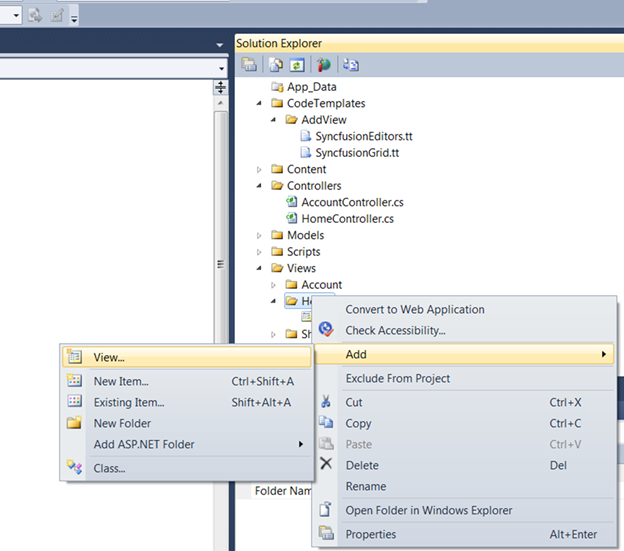
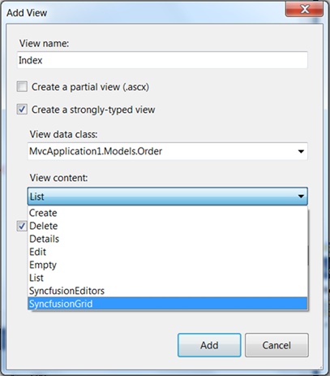
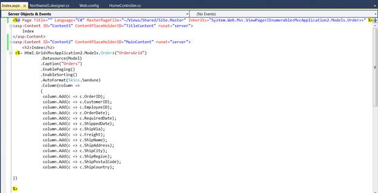
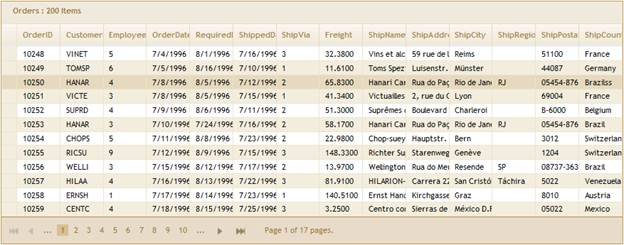

To create a Grid Template using custom Syncfusion T4 Templates, follow the below steps.
10. Open a new Grid MVC Project template which is fully configured for Grid Control. Refer MVC Project Template
11. Now, in Project right click Home folder and click Add, followed by View. The below image illustrates this.

Figure 21: Adding View
12. Type the View Name and select the strongly typed view. Select the Model from View Data Class dropdownlist and then select Grid Template.
The following image illustrates how to select Grid Template.

Figure 22: Selecting Grid Template
13. In Index.aspx file, all basic operations are enabled and all columns are mapped like shown below. It can be customized to enable/disable any feature.

Figure 23: Grid rendered in View page using Template
14. As soon as run your project, Grid will appear as shown below.

Figure 24: Grid created using CodeTemplate
15. Refer Grid MVC UG, for further customization.